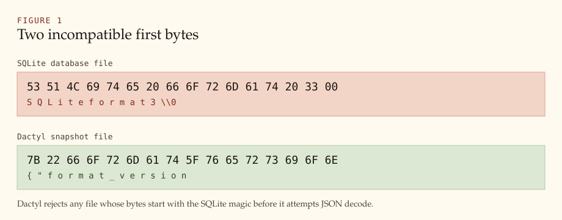
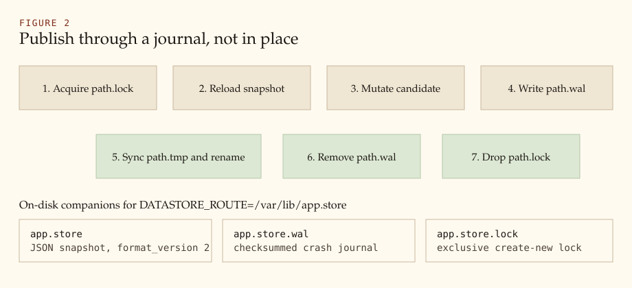

The Dactyl Store Format
A methodology for a bounded application store that refuses to wear SQLite's header.
Dactyl's local route is still labeled sqlite, but the
on-disk artifact is not a SQLite database. The file is a versioned
JSON snapshot owned by Dactyl. The current format version is
2. Files whose first bytes are the SQLite magic string
SQLite format 3 are rejected by
Connection::open with a typed capability error before
JSON decode. Legacy SQLite files convert only through explicit
import_sqlite_file / dactyl-import behind
legacy-import. Durability is published through a
checksummed sidecar journal and an atomic rename, not through
SQLite's pager, WAL, or rollback journal.
1. The confusion the header is meant to stop
Callers open a local store with names that
still say SQLite: DATASTORE=sqlite,
DatastoreRoute::sqlite(path), and the crate feature
sqlite. Those names are compatibility labels. They keep
Decapod and Propodus routing stable. They do not mean “this path is a
SQLite database.”
A SQLite file is a social contract. The first sixteen bytes tell
every operator tool — sqlite3, Datasette, Litestream,
backup agents, hex editors — that the rest of the file is a paged
B-tree database. Dactyl does not implement that contract and must
not impersonate it.
The local adapter says so in its module docs: it has no SQLite
dependency, does not read or write SQLite files, and uses a
versioned JSON snapshot, a checksummed sidecar journal, and a lock
file. The constructor name SqliteAdapter is retained
for route compatibility only.
2. What a SQLite header actually promises
SQLite's database header is a 100-byte structure at offset 0. The first sixteen bytes are the magic:
53 51 4C 69 74 65 20 66 6F 72 6D 61 74 20 33 00 S Q L i t e f o r m a t 3 \0
The remaining header fields describe page size, write version,
reserved space, schema cookie, text encoding, and other pager
state. After that come B-tree pages, a rollback journal or WAL, and
the sqlite_schema catalog.
Accepting that header would commit Dactyl to one of two bad outcomes:
- Impersonation. Write a SQLite-looking file that is not a SQLite database. Tools would open it, then corrupt it or report nonsense.
- Adoption. Become a SQLite engine, including C bindings or a complete pager, type affinity, and planner. That is a different product.
Dactyl chooses a third outcome: refuse the header.

3. Why Dactyl owns a store instead of borrowing SQLite
Dactyl is an application-layer driver. It exists so Decapod can run the same read, write, and atomic-batch contract against a local file or a remote Neon/Propodus endpoint. The crate's job is physical execution, parameter binding, result normalization, access mode, and typed failures. It is not a DBA tool, not a planner, and not a schema owner.
The local implementation is therefore constrained:
- no
sqlite,rusqlite,libsqlite3-sys, SQLite subprocess, or Turso runtime - no process-global connection cache
- no hidden catalog tables
- no dialect rewrite that makes unsupported SQL look successful
- caller-owned schema, migration ids, backups, and import
A SQLite file would import a second product into those constraints. The JSON snapshot keeps the local store inside the same ownership boundary as the public API.
4. The snapshot format
A non-empty store is a UTF-8 JSON object:
{
"format_version": 2,
"tables": {
"events": {
"name": "events",
"columns": [
{ "name": "id", "primary_key": true, "unique": false, "not_null": true, "default": null },
{ "name": "name", "primary_key": false, "unique": false, "not_null": false, "default": null }
],
"rows": [[1, "opened"]],
"next_id": 2,
"unique_constraints": [],
"foreign_keys": []
}
},
"indexes": {}
}
The first bytes of that object are { (0x7B)
followed by the format_version field. That is the
Dactyl header in the only sense that matters: a versioned,
inspectable prefix that cannot be mistaken for
SQLite format 3.
4.1 Version window
FORMAT_VERSION is 2. Load accepts
1 or 2. Any other version fails with
AdapterErrorKind::Capability and the message
unsupported Dactyl store format. After a successful
load, the in-memory store is raised to version 2
before later writes republish it. An empty file is a valid empty
store.
4.2 Tables and values
Each table is a named collection of columns plus a vector of JSON
rows. Column names are stored lowercased. There is no SQLite type
affinity. A CREATE TABLE type name such as
integer or text is consumed by the parser
and discarded. The store remembers constraints, not declared types.
| Parameter | JSON cell |
|---|---|
Null | null |
Bool | JSON boolean |
Integer | JSON number |
Real | JSON number, or null if not finite |
Text | JSON string |
Blob | JSON array of byte numbers |
Integer primary keys allocate from next_id, starting at
1. Inserting an explicit integer key raises
next_id past that value.
4.3 Constraints and indexes
The snapshot records column flags, table-level unique constraints
including composite primary keys, foreign keys with
restrict or cascade delete actions, and
named indexes. Indexes are structural constraints. They are not a
query planner and do not change SELECT access paths.
Literal defaults and CURRENT_TIMESTAMP are stored;
the latter is materialized as {unix_seconds}Z at insert
time.
5. The durability protocol
The route path is the snapshot. Two sidecars complete the local
protocol. The .wal suffix is a file name, not SQLite
WAL mode.
| Path | Role |
|---|---|
$ROUTE | published JSON snapshot |
$ROUTE.wal | checksummed crash journal |
$ROUTE.lock | exclusive create_new lock |
The journal checksum is FNV-1a 64 over
serde_json::to_vec(store) with offset basis
0xcbf29ce484222325 and prime
0x100000001b3.

Connection::atomic uses the same publish step after
every operation in the batch succeeds. A failed batch leaves the
previous snapshot in place. Read-only opens do not recover a
leftover journal: recovery is a write.
6. Header rejection as methodology
load_store inspects the raw bytes before JSON decode:
if bytes.starts_with(b"SQLite format 3") {
return Err(capability(
"SQLite files are not accepted; import into the Dactyl format",
));
}
The check is a methodology statement:
- Do not impersonate SQLite. A Dactyl file must not look like a SQLite file.
- Do not silently import on open. Conversion is
import_sqlite_file, notopen. - Fail closed on the wrong product. A SQLite magic prefix is a capability miss, not a corrupt Dactyl file.
Same-path import writes a complete snapshot to a temporary file, then
moves the original SQLite file to $path.legacy-sqlite.
Re-running on a converted path is idempotent. A divergent Dactyl
destination fails instead of overwriting.
The inverse is also true. Opening a Dactyl snapshot with
sqlite3 is unsupported. The file starts with
{, not the SQLite magic.
7. Bounded SQL is the other half of the format
The on-disk format is only useful if the SQL that mutates it has a closed meaning. The local adapter is a recursive-descent parser over a storage subset, not a SQLite frontend.
Supported statements: SELECT with projections, optional
FROM, WHERE, ORDER BY, and
LIMIT; INSERT and
INSERT OR IGNORE; UPDATE /
DELETE; CREATE TABLE [IF NOT EXISTS];
ALTER TABLE ... ADD [COLUMN];
CREATE [UNIQUE] INDEX [IF NOT EXISTS];
DROP TABLE / DROP INDEX.
Predicates are comparisons, IS [NOT] NULL, and
AND. Parameters are $1 or ?.
Multi-statement text is accepted only for schema operations.
BEGIN, COMMIT, and ROLLBACK
are rejected; physical transaction boundaries belong to
Connection::atomic.
Unsupported SQL fails closed as Capability or
Query. The engine does not rewrite a join,
OR, function call, or subquery into a nearby supported
form. Connection::inspect_schema() is the portable
catalog. This is the same fail-closed posture as the file header.
8. What this methodology is not
- Not a SQLite replacement and not a Postgres replacement.
- Not a silent compatibility veneer:
openstill rejects a SQLite header. - Not encryption, compression, or page-level storage.
- Not a migration manager. Callers own ids, order, and expand/contract policy.
- Not a claim that Neon uses this file. Neon receives SQL over
/queryand/batch.
9. Operational consequences
Point DATASTORE_ROUTE at a Dactyl path, not at a file
you intend to open with sqlite3. Convert a leftover
SQLite decapod.db with dactyl-import first.
Copying the snapshot is a backup of published state. Copying a torn
.wal without the recovery rule above is not a restore
procedure.
- valid journal plus read-write open → recover, publish, delete journal
- valid journal plus read-only open → typed
ReadOnlyerror - checksum or version mismatch → typed
Storageerror
10. Proof
The behavior is implemented in
src/adapter/sqlite/mod.rs (FORMAT_VERSION,
Store, Journal, load_store,
persist_store, checksum). The public
README states that a SQLite header is rejected.
tests/storage_contract.rs proves durability across
reopen, atomic rollback, lock timeout, and header rejection.
A skipped live Neon backend remains unavailable. This
paper does not claim cloud file-format parity; Neon is not a Dactyl
snapshot.
References
- SQLite file format, section 1.2 “The Database Header”: sqlite.org/fileformat2.html
- Dactyl local adapter:
src/adapter/sqlite/mod.rs - Dactyl application contract:
.decapod/managed/specs/INTERFACES.md - Issues that replaced the C SQLite local engine: #51–#57, #58, #61